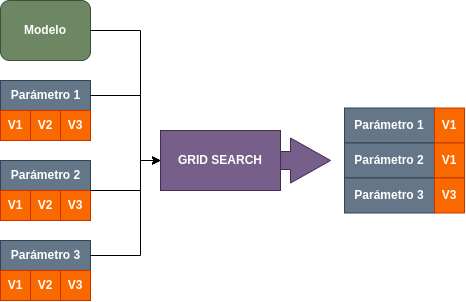

Búsqueda de hiperparámetros#
A lo largo de las distinas secciones hemos visto distintos algoritomos de aprendizaje automático que se configuran mediante hiperparámetros. Como ya se ha dicho, estos deben ser ajustados, el problema viene dado en que muchos de estos tienen rangos muy grandes, llegando incluso al infinito. Es por eso que existen técnica que ayudan a encontrar estos parámetros. Una de ellas es el GridSearch.
El “Grid Search” o búsqueda en cuadrícula es una técnica utilizada en aprendizaje automático (machine learning) para encontrar los mejores hiperparámetros para un modelo. La idea detrás de la búsqueda en cuadrícula es definir una cuadrícula de posibles valores para los hiperparámetros que se desean ajustar y evaluar el rendimiento del modelo para cada combinación de estos valores. Luego, se selecciona la combinación que produce el mejor rendimiento según alguna métrica predefinida, como la precisión, el área bajo la curva ROC, la F1-score, entre otras.
{kind=link}
Por ejemplo, si estás trabajando con un algoritmo de clasificación como Support Vector Machines (SVM) y tienes dos hiperparámetros que deseas ajustar, C y gamma, podrías definir una cuadrícula de valores para ambos, y el algoritmo de búsqueda en cuadrícula probaría todas las combinaciones posibles de valores de C y gamma para encontrar la combinación que maximiza el rendimiento del modelo en tu conjunto de datos.
La búsqueda en cuadrícula puede ser una herramienta eficaz, pero puede volverse computacionalmente costosa, especialmente cuando se tienen muchos hiperparámetros o cuando cada combinación requiere entrenar y evaluar el modelo en múltiples iteraciones.
Como funciona el Grid Search#
La búsqueda en cuadrícula funciona de manera sistemática al explorar un conjunto predefinido de valores de hiperparámetros para encontrar la combinación que optimiza el rendimiento del modelo. Aquí hay una descripción general de cómo funciona:
Definición de la cuadrícula de hiperparámetros: Selecciona los hiperparámetros que deseas ajustar. Especifica una cuadrícula de posibles valores para cada hiperparámetro. Por ejemplo, si estás ajustando los hiperparámetros C y gamma para un SVM, puedes definir una cuadrícula con varios valores de C y gamma.
Creación de combinaciones: Genera todas las posibles combinaciones de valores de hiperparámetros utilizando la cuadrícula definida. Esto crea un conjunto de combinaciones que se evaluarán.
Entrenamiento y evaluación del modelo: Por cada combinación de hiperparámetros, entrena el modelo utilizando esos valores en un conjunto de entrenamiento. Evalúa el rendimiento del modelo en un conjunto de validación o mediante alguna métrica específica.
Selección del mejor modelo: Registra el rendimiento para cada combinación de hiperparámetros. Selecciona la combinación que produce el mejor rendimiento según la métrica objetivo (puede ser precisión, F1-score, AUC, etc.).
GridSearchCV#
GridSearchCV es una función proporcionada por la biblioteca scikit-learn en Python que realiza la búsqueda en cuadrícula junto con la validación cruzada (cross-validation).
El siguiente código muestra un ejemplo para esta función para un SVC:
from sklearn.model_selection import GridSearchCV
from sklearn.model_selection import train_test_split
from sklearn.svm import SVC
X_train, X_test, y_train, y_test = train_test_split(X, y, test_size=0.2, random_state=42)
param_grid = {'C': [0.1, 1, 10], 'gamma': [0.01, 0.1, 1]}
svm = SVC()
grid_search = GridSearchCV(svm, param_grid, cv=5, scoring='accuracy')
grid_search.fit(X_train, y_train)
best_params = grid_search.best_params_
best_model = grid_search.best_estimator_
test_accuracy = best_model.score(X_test, y_test)
En este códogio el algoritmo está intentando encontrar los mejores parámetros (previamente definidos como un diccionario) para el modelo SVC.
Para ello, entrena el modelo utilizando la validación cruzada. Una vez encontrados, podemos ver cuales son mediante la propiedad best_params_.
Por otro lado, con best_estimator_ podemos acceder a la propiedad que nos dice el mejor modelo de todos los entrenados.
Finalmente, podemos hacer el test con el algoritmo para ver los resultados.
Parámetros más importantes#
El GridSearchCV actua igual que cualquier otro modelo de la libreria scikit-learn. A continuación se listan los hiperparámetros más importantes:
| HIPERPARÁMETROS DE UN GRID SEARCH CV | |||
|---|---|---|---|
| estimator | Este parámetro recibe el modelo que estás utilizando. Puede ser un clasificador, un regresor u otro tipo de modelo de scikit-learn. | ||
| param_grid | Este es el diccionario que define la cuadrícula de hiperparámetros que se probarán. Cada clave del diccionario es el nombre del hiperparámetro, y los valores son listas de posibles valores que se probarán. | ||
| scoring | Este parámetro especifica la métrica de evaluación que se utilizará para seleccionar el mejor modelo. Puedes elegir entre diversas métricas, como 'accuracy', 'precision', 'recall', 'f1', etc. | cv | Indica el número de divisiones en la validación cruzada. Un valor común es 5 para validación cruzada de 5 pliegues. | n_jobs | Especifica el número de hilos para realizar la búsqueda en paralelo. Si tienes acceso a múltiples núcleos de CPU, puedes establecer n_jobs en un valor mayor que 1 para acelerar el proceso. | verbose | Controla la cantidad de mensajes que se imprimen durante la búsqueda en cuadrícula. Un valor mayor que 0 proporciona más información sobre el proceso. |